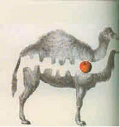
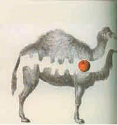

CHƯƠNG 3 - VŨ TRỤ TRONG MỘT VỎ HẠT
Note
Có thể tôi bị giam trong một vỏ hạt. Và tự coi mình là chúa tể của khoảng không vô tận...
Shakespeare, Hamlet, hồi 2, cảnh 2
(nguyên văn: I could be bounded in a nutshell And count myself a king of infinitive space...)
Hamlet muốn nói rằng, về mặt vật lý, loài người chúng ta bị giới hạn, nhưng trí óc của chúng ta tự do khám phá toàn bộ vũ trụ và táo bạo đi đến những nơi mà ngay cả Star Trek cũng sợ không dám đặt chân - nơi mà chỉ được phép đến trong những cơn ác mộng.
Vũ trụ là vô tận hay chỉ là rất lớn? Và vũ trụ là vĩnh cửu hay chỉ là trường thọ? Làm thế nào mà trí óc hữu hạn của chúng ta có thể hiểu một vũ trụ vô hạn? Có phải chúng ta quá liều lĩnh khi thử trả lời các câu hỏi đó? Chúng ta sẽ không may giống Prometheus, người đã lấy cắp lửa của thần Zeus cho con người sử dụng và bị trừng phạt vì sự liều lĩnh đó bằng một sợi dây xích trói vào núi đá để một con đại bàng ăn lá gan của mình, hay không?
Mặc dù có câu chuyện cảnh báo trên, tôi vẫn tin chúng ta có thể và nên cố gắng hiểu vũ trụ này. Loài người đã có những bước tiến bộ đáng kể trong việc nhận thức vũ trụ, đặc biệt là chỉ trong một vài năm qua. Chúng ta vẫn chưa có một bức tranh hoàn chỉnh, nhưng chúng ta tiến rất gần đến nó.
Điều rõ ràng nhất về không gian là chúng liên tục và liên tục. Điều này được khẳng định bằng các dụng cụ rất hiện đại như là kính thiên văn Hubble, cho phép chúng ta thăm dò những nơi sâu thẳm của không gian. Những điều mà chúng ta nhìn thấy là hàng tỷ tỷ các thiên hà với những hình dạng và kích thước khác nhau (hình 3.1), mỗi thiên hà gồm nhiều tỷ ngôi sao, trong đó, rất nhiều ngôi sao có các hành tinh quay xung quanh. Chúng ta đang sống trên một hành tinh đang quay xung quanh một ngôi sao nằm trên một cánh tay bên ngoài của dải Ngân hà hình xoắn ốc. Bụi trong các cánh tay xoắn ốc giới hạn tầm nhìn của chúng ta vào vùng vũ trụ nằm trong mặt phẳng của thiên hà. Nhưng chúng ta có thể nhìn rất rõ vùng không gian nằm trong mặt nón có trục vuông góc với mặt phẳng đó. Và ta có thể vẽ sơ đồ vị trí của các thiên hà xa xôi (hình 3.2). Ta thấy rằng các thiên hà phân bố tương đối đồng nhất trong không gian với một số nơi có mật độ dày đặc hơn và cả các khoảng không trống rỗng. Mật độ các thiên hà giảm đi ở những khoảng cách lớn, ta thấy chúng có vẻ như thế vì các thiên hà ở quá xa và quá yếu đến nỗi chúng ta không thể nhận ra chúng. Với tầm quan sát của con người bây giờ, ta có thể nói vũ trụ là vô tận trong không gian. (hình 3.3)
Mặc dù tại mỗi vị trí trong không gian, vũ trụ có vẻ như không thay đổi, nhưng chắc chắn nó thay đổi theo thời gian. Điều này chỉ được biết vào những năm đầu của thế kỷ 20. Trước đó, người ta cho rằng vũ trụ không thay đổi theo thời gian. Vũ trụ có thể đã tồn tại trong một thời gian vô hạn, nhưng điều đó sẽ dẫn đến các kết luận vô lý. Nếu các ngôi sao bức xạ trong một thời gian vô tận thì chúng sẽ nung nóng vũ trụ cho đến nhiệt độ của chúng. Thậm chí ngay cả ban đêm, toàn bộ bầu trời của chúng ta cũng sẽ sáng như mặt trời bởi vì mỗi một đường ngắm sẽ đi đến một ngôi sao hay một đám mây bụi bị các ngôi sao nung nóng cho đến bằng nhiệt độ của các ngôi sao. (hình 3.4)
Việc chúng ta thấy ban đêm bầu trời tối là rất quan trọng. Điều đó cho thấy rằng vũ trụ không thể tồn tại mãi mãi ở trạng thái mà chúng ta thấy ngày hôm nay. Phải có cái gì đó đã xảy ra trong quá khứ để các ngôi sao tỏa sáng chỉ trong một thời gian hữu hạn trước đây. Điều này nói rằng ánh sáng từ các ngôi sao rất xa xôi vẫn chưa kịp đến chỗ chúng ta. Nó sẽ giải thích tại sao bầu trời ban đêm không sáng theo tất cả các hướng. Nếu từ trước đến nay các ngôi sao vẫn ở vị trí đó thì tại sao cách đây vài tỷ năm chúng lại đột nhiên tỏa sáng? Đồng hồ nào nói với chúng rằng đã đến lúc cần chiếu sáng? Như chúng ta đã thấy, điều này làm các nhà triết học như Immanuel Kant, người tin rằng vũ trụ tồn tại mãi mãi, bối rối. Nhưng với phần đông mọi người, ý tưởng cho rằng vũ trụ được sáng tạo giống như ngày nay chỉ cách đây vài ngàn năm là hợp lý.
Tuy vậy, vào thập niên 20 của thế kỷ 20, các ý tưởng khác đến từ các quan sát của Vesto Slipher và Edwin Hubble bắt đầu xuất hiện. Năm 1923, Hubble đã phát hiện ra rằng thực ra rất nhiều vùng sáng được gọi là tinh vân (nebulae) chính là các thiên hà, một tập hợp khổng lồ các ngôi sao như mặt trời nhưng ở khoảng cách rất xa. Để chúng xuất hiện rất nhỏ và yếu thì khoảng cách cần phải lớn đến nỗi ánh sáng từ đó phải mất hàng triệu thậm chí hàng tỷ năm mới đến được chúng ta. Điều đó chỉ ra rằng điểm bắt đầu của vũ trụ không thể chỉ vài ngàn năm trước đây.
- Hiệu ứng Doppler nói lên mối quan hệ giữa tốc độ và bước sóng, một kinh nghiệm ta thấy hàng ngày. Hãy lắng nghe một chiếc máy bay đi ngang qua đầu chúng ta; khi nó tiến lại gần chúng ta ta nghe thấy tiếng động cơ chói tai hơn, còn khi nó đi ra xa chúng ta thì tiếng động sẽ trầm hơn.
- Tiếng động chói tai tương ứng với bước sóng (khoảng cách giữa hai đỉnh sóng kế tiếp nhau) ngắn hơn và tần số (số sóng trong một giây) cao hơn.
- Đó là do khi máy bay tiến lại gần chúng ta thì khoảng cách giữa hai đỉnh sóng âm do máy bay phát đi đến chúng ta sẽ gần nhau hơn.
- Ngược lại, khi máy bay đi ra xa các bước sóng sẽ tăng lên và âm tần sẽ thấp đi.
Nhưng điều thứ hai mà Hubble quan sát được còn quan trọng hơn. Bằng việc phân tích ánh sáng từ các thiên hà khác, các nhà thiên văn có thể biết các thiên hà đang tiến lại gần chúng ta hay đi ra xa chúng ta (hình 3.5). Họ cực kỳ ngạc nhiên khi phát hiện ra rằng gần như hầu hết các thiên hà đang đi ra xa chúng ta. Chính Hubble đã nhận thấy hàm ý đầy kịch tính của phát hiện này: tại các khoảng cách lớn, mỗi thiên hà điều chuyển động ra xa khỏi các thiên hà khác. Vũ trụ đang giãn nở (hình 3.6).
Từ phân tích tia sáng từ các thiên hà khác, vào những năm 1920, Edwin Hubble phát hiện ra rằng hầu hết các thiên hà đang chuyển động ra xa khỏi chúng ta với vận tốc \(V\) tỷ lệ với khoảng cách \(R\) từ chúng đến trái đất, do đó \(V = H*R\).
Định luật này được gọi là định luật Hubble, nó cho thấy vũ trụ đang giãn nở với hằng số Hubble H xác định tốc độ giãn nở.
Đồ thị bên dưới thể hiện các quan sát rất mới về dịch chuyển đỏ của các thiên hà khẳng định định luật Hubble đúng với khoảng cách rất xa chúng ta. Sự cong lên ở vùng có khoảng cách rất lớn trên đồ thị cho thấy rằng sự giãn nở đang được tăng tốc, điều này có thể do năng lượng chân không.
| Thời gian | Sự kiện |
|---|---|
| 1912 | Slipher đo ánh sáng từ bốn tinh vân và thấy rằng ba tinh vân bị dịch về phía đỏ còn Andromeda bị dịch về phía xanh. Ông giải thích rằng Andromeda đang chuyển động lại gần chúng ta còn ba tinh vân kia thì chuyển động ra xa chúng ta. |
| 1912-1914 | Slipher đo 12 tinh vân. Tất cả trừ một tinh vân đều dịch về phía đỏ. |
| 1914 | Slipher báo cáo phát hiện của ông trước Hội thiên văn Hoa Kỳ. Hubble nghe báo cáo này. |
| 1918 | Hubble bắt đầu nghiên cứu các tinh vân. |
| 1923 | Hubble xác định các tinh vân có hình xoáy ốc là các thiên hà. |
| 1914-1925 | Slipher và những người khác tiếp tục đo dịch chuyển Doppler. Năm 1925, họ ghi nhận được 43 dịch chuyển đỏ và 2 dịch chuyển xanh. |
| 1929 | Hubble và Milton Humason - sau khi tiếp tục đo dịch chuyển Doppler và thấy rằng ở tầm vĩ mô các thiên hà đang lùi ra xa nhau - công bố khám phá của họ về vũ trụ đang giãn nở. |
Phát hiện về sự giãn nở của vũ trụ là một trong những cách mạng trí tuệ vĩ đại nhất của thế kỷ 20. Tất cả mọi người hoàn rất nhiên về phát hiện này và nó thay đổi hoàn toàn tranh cãi về nguồn gốc của vũ trụ. Nếu các thiên hà chuyển động ra xa nhau thì trong quá khứ chúng cần phải ở gần nhau hơn. Từ tốc độ giãn nở hiện thời, chúng ta có thể ước đoán rằng các thiên hà cần phải ở rất gần nhau các đây mười đến mười lăm tỷ năm. Như đã nói trong chương trước, Roger Penrose và tôi có thể chứng minh rằng thuyết tương đối rộng của Einstein ngụ ý vũ trụ và bản thân thời gian được sinh ra trong một vụ nổ dữ dội. Đó chính là lời giải thích cho câu hỏi tại sao ban đêm bầu trời lại tối: không một ngôi sao nào có thể phát sáng lâu hơn mười đến mười lăm tỷ năm, khoảng thời gian tính từ vụ nổ lớn.
Giả sử thuyết tương đối rộng đúng, thì vũ trụ sẽ khởi đầu với mật độ và nhiệt độ vô hạn của điểm kỳ dị vụ nổ lớn. Vì vũ trụ đang giãn nở nên nhiệt độ của bức xạ bị giảm đi. Khoảng một phần trăm giây sau vụ nổ lớn, nhiệt độ vào khoảng 100 tỷ độ và vũ trụ chủ yếu gồm các photon, điện tử và neutrino (những hạt cực nhẹ) và các phản hạt của chúng cùng với một số proton và neutron. Ba giây tiếp theo, vũ trụ lạnh xuống còn 1 tỷ độ, proton, neutron bắt đầu kết hợp tạo ra hạt nhân nguyên tử helium, hydro và các nguyên tố nhẹ khác.
Hàng trăm ngàn năm sau, nhiệt độ xuống còn vài ngàn độ, các điện tử chuyển động chậm dần và hạt nhân các nguyên tố nhẹ bắt điện tử để tạo thành nguyên tử. Tuy nhiên, các nguyên tố nặng tạo nên chúng ta như carbon và oxygen chỉ được hình thành hàng tỷ năm sau từ việc đốt helium ở tâm các ngôi sao.
Bức tranh về trạng thái đặc nóng vào thời kỳ sơ khai của vũ trụ được nhà khoa học George Gamow đưa ra vào năm 1948 trong một bài báo ông viết cùng với Ralph Alpher. Bài báo đưa ra một tiên đoán quan trọng là bức xạ từ giai đoạn sơ khai nóng bỏng đó vẫn còn tồn tại cho đến ngày nay. Tiên đoán của họ được nhà vật lý Arno Penzias và Robert Wilson kiểm chứng vào năm 1965 dựa vào quan sát bức xạ phông vi sóng.
Chúng ta đã quen thuộc với quan niệm cho rằng các sự kiện là hệ quả của các sự kiện trước đó, và đến lượt các sự kiện trước đó lại là hệ quả của các sự kiện trước nữa. Có một chuỗi nhân quả kéo dài mãi về quá khứ. Nhưng bây giờ hãy giả sử rằng chuỗi nhân quả đó có một điểm khởi đầu. Hãy giả sử rằng có một sự kiện đầu tiên. Cái gì đã gây ra nó? Đây không phải là một câu hỏi mà nhiều nhà khoa học muốn đề cập. Họ cố gắng tránh câu hỏi đó bằng cách cho rằng vũ trụ không có điểm khởi đầu như người Xô Viết hoặc níu kéo rằng nguồn gốc của vũ trụ không nằm trong địa hạt của khoa học mà thuộc về siêu hình học (metaphysics) hoặc tôn giáo. Theo tôi, một nhà khoa học chân chính sẽ không làm như thế. Nếu các định luật khoa học không đúng tại thời điểm bắt đầu của vũ trụ thì chúng có thể không đúng tại các thời điểm khác hay không? Một định luật sẽ không là một định luật nếu thỉnh thoảng nó mới đúng. Chúng ta cần phải cố gắng hiểu điểm khởi đầu của vũ trụ dựa trên cơ sở khoa học. Có thể nó vượt qua khả năng của chúng ta, nhưng ít nhất chúng ta nên cố gắng thử làm điều đó.
Mặc dù các định lý do Penrose và tôi chứng minh cho thấy rằng vũ trụ phải có điểm bắt đầu, nhưng chúng không cho biết nhiều thông tin về bản chất của sự khởi đầu đó. Chúng chỉ ra rằng vũ trụ bắt đầu bằng một vụ nổ lớn, một điểm mà ở đó toàn bộ vũ trụ và tất cả mọi thứ trong đó bị nén vào một điểm có mật độ vô hạn. Tại điểm này, thuyết tương đối rộng của Einstein không còn đúng, do đó, không thể dùng nó để tiên đoán vũ trụ bắt đầu như thế nào. Con người vẫn chưa hiểu nguồn gốc của vũ trụ và hiển nhiên là nó nằm ngoài phạm vi của khoa học.
Các nhà khoa học không hài lòng với kết luận này. Như chương 1 và chương 2 đã chỉ rõ, lý do thuyết tương đối không đúng tại gần vụ nổ lớn là nó không tích hợp với nguyên lý bất định, yếu tố ngẫu nhiên của thuyết lượng tử mà Einstein đã phản đối dựa trên Chúa không chơi trò xúc xắc. Tuy vậy tất cả các bằng chứng đều cho thấy Chúa là một tay chơi bạc. Người ta có thể nghĩ về vũ trụ như một sòng bạc khổng lồ với các con xúc xắc được gieo và các vòng số được quay mỗi khi có dịp (hình 3.7). Bạn có thể nghĩ rằng điều khiển một sòng bạc như vậy là một vụ làm ăn rất may rủi bởi bạn rất có khả năng mất hết tiền khi xúc xắc gieo hay vòng số quay. Nhưng với một số lớn các vụ đánh cược, số lần thắng và thua trung bình có thể đoán được, mặc dù kết quả của một lần cụ thể không đoán trước được (hình 3.8). Những chủ sòng bạc biết chắc tỷ lệ trung bình có lợi cho họ. Điều đó giải thích tại sao chủ sòng bạc rất giàu. Cơ hội duy nhất để bạn có thể thắng họ là đặc cược tất cả số tiền của bạn vào một số ít lần gieo xúc xắc hoặc quay số.
Vũ trụ cũng giống như vậy. Khi vũ trụ lớn như ngày nay, có một số lớn lần gieo xúc xắc, và kết quả trung bình có thể đoán trước được. Vì thế các định luật cổ điển đúng đối với các hệ lớn. Nhưng khi vũ trụ rất nhỏ, giống như ở gần thời điểm vụ nổ lớn, chỉ có một số ít lần gieo xúc xắc, và nguyên lý bất định trở lên quan trọng.
Vì vũ trụ cứ gieo xúc xắc hoài để xem cái gì sẽ xảy ra nên vũ trụ không có một lịch sử duy nhất như người ta có thể nghĩ. Thay vào đó, vũ trụ có tất cả các lịch sử khả dĩ, mỗi một lịch sử có một xác xuất của riêng nó. Phải có một lịch sử vũ trụ trong đó Belize đạt huy chương vàng tại các kỳ Olympic mặc dù xác xuất của vũ trụ đó thấp.
Ý tưởng về vĩ trụ có nhiều lịch sử nghe có vẻ như chuyện khoa học viễn tưởng, nhưng ngày nay khoa học đã chấp nhận nó. Ý tưởng đó được một nhà vật lý vĩ đại, một người đầy cá tính là Richard Feynman đề xuất.
Sinh ra tại Brooklyn, New York năm 1918, Richard Feynman bảo vệ tiến sỹ tại đại học Princeton dưới sự hướng dẫn của John Wheeler vào năm 1942. Ngay sau đó, ông bị lôi kéo vào dự án Mahattan. Ở đó, ông nổi tiếng về tính cách cởi mở và hài hước - tại phòng thí nghiệm Los Alamos, ông rất thích phá các hệ thống bảo mật - và để trở thành một nhà vật lý khác thường: ông trở thành người đóng góp chủ yếu cho lý thuyết bom nguyên tử. Thói quen liên tục tìm tòi khám phá của Feynman về thế giới chính là gốc rễ của con người ông. Nó không chỉ là cái máy làm nên các thành công khoa học mà còn dắt ông đến rất nhiều khám phá kỳ thú ví như giải mã những chữ tượng hình của người Maya.
Vào những năm sau Thế chiến hai, Feynman tìm ra một phương pháp mới rất hiệu quả trong việc nhận thức cơ học lượng tử. Và chính điều đó mang giải Nobel năm 1965 đến với ông. Ông thách thức giả thuyết cổ điển cơ bản là mỗi hạt có một lịch sử đặc biệt. Thay vào đó, ông cho rằng các hạt di chuyển từ nơi này đến nơi khác theo tất cả các lộ trình khả dĩ trong không thời gian. Với mỗi lộ trình Feynman liên hệ với hai con số, con số thứ nhất là kích thước - biên độ - của sóng và con số thứ hai là pha - cho biết đó là đỉnh hoặc hõm sóng. Xác suất của một hạt đi từ A đến B cho bởi tổng các sóng liên quan đến lộ trình khả dĩ đi qua A và B.
Tuy vậy trong cuộc sống hàng ngày, chúng ta thấy dường như các vật thể đi theo một lộ trình duy nhất từ điểm đầu đến điểm cuối. Điều này phù hợp với ý tưởng đa lịch sử (hoặc tổng theo các lịch sử), vì đối với các vật thể lớn thì qui tắc của ông về gán các con số cho mỗi lộ trình đảm bảo tất cả các lộ trình (trừ một lộ trình duy nhất) phải triệt tiêu lẫn nhau khi đóng góp của chúng được kết hợp lại. Chỉ có một trong số vô hạn các lộ trình có ý nghĩa đối với chuyển động của các vật thể vĩ mô là được xem xét và đó chính là lộ trình có được từ các định luật chuyển động cổ điển của Newton.
Bây giờ chúng ta kết hợp thuyết tương đối rộng của Einstein và ý tưởng vũ trụ có nhiều lịch sử của Feynman thành một lý thuyết thống nhất hoàn toàn mô tả mọi thứ xảy ra trong vũ trụ. Lý thuyết thống nhất này sẽ cho phép ta tính được vũ trụ sẽ phát triển thế nào nếu ta biết các lịch sử bắt đầu như thế nào. Nhưng bản thân lý thuyết đó không nói cho chúng ta biết vũ trụ bắt đầu thế nào hay trạng thái ban đầu của vũ trụ là gì. Để biết được điều đó chúng ta cần một cái gọi là điều kiện, quy tắc biên. Các điều kiện biên nói cho chúng ta biết cái gì xảy ra ở rìa của vũ trụ, ở biên của không thời gian.
Nếu rìa của vũ trụ chỉ là những điểm bình thường của không thời gian, chúng ta có thể đi qua nó và tuyên bố lãnh thổ bên ngoài rìa vũ trụ là một phần của vũ trụ. Mặt khác, nếu biên của vũ trụ nằm trên một đường lởm chởm trong không thời gian mà ở đó không thời gian bị cuộn lại và mật độ lớn vô cùng thì sẽ rất khó xác định các điều kiện biên có ý nghĩa.
Tuy vậy, một đồng nghiệp của tôi là Jim Hartle và tôi đã nhận ra rằng có một khả năng thứ ba. Vũ trụ có thể không có biên trong không thời gian. Thoạt nhìn, điều này có vẻ mâu thuẫn trực tiếp với các định lý mà Perose và tôi đã chứng minh, chúng cho thấy vũ trụ cần phải có một điểm khởi đầu, một cái biên thời gian. Tuy vậy, như được giải thích trong chương 2, có một loại thời gian được gọi là thời gian ảo vuông góc với thời gian thực bình thường mà chúng ta đang trải nghiệm. Lịch sử vũ trụ theo thời gian thực sẽ xác định lịch sử của nó theo thời gian ảo và ngược lại, nhưng hai loại lịch sử này có thể rất khác nhau. Đặc biệt là vũ trụ cần có khởi đầu và kết thúc trong thời gian ảo. Thời gian ảo hành xử như giống hệt một trục khác của không gian. Cho nên các lịch sử của vũ trụ trong thời gian ảo có thể được coi như các mặt cong giống như một quả bóng, một mặt phẳng, hoặc một hình yên ngựa nhưng có bốn chiều thay vì hai chiều (hình 3.9).
Nếu các lịch sử của vũ trụ tiến đến vô hạn như hình chiếc yên ngựa, ta sẽ gặp khó khăn trong việc tìm điều kiện biên vì lúc đó nó là vô hạn. Nếu các lịch sử của vũ trụ trong thời gian ảo là các mặt đóng giống như bề mặt trái đất thì ta cũng không thể chỉ ra điều kiện biên được.
CÁC ĐỊNH LUẬT TIẾN HÓA VÀ CÁC ĐIỀU KIỆN BAN ĐẦU
Các định luật vật lý bắt buộc một trạng thái ban đầu phải tiến hóa theo thời gian. Ví dụ, nếu ta ném một hòn đá vào trong không khí thì các định luật hấp dẫn sẽ quyết định chính xác chuyển động sau đó của hòn đá.
Nhưng chúng ta không thể đoán được hòn đá sẽ rơi chính xác tại đâu từ các định luật đó. Để làm được điều đó chúng ta cần phải biết tốc độ và hướng ban đầu khi hòn đá rời khỏi tay chúng ta. Nói cách khác là chúng ta cần phải biết điều kiện ban đầu - hay điều kiện biên - của chuyển động của hòn đá.
Vũ trụ học cũng cố gắng mô tả tiến hóa của toàn bộ vũ trụ bằng các định luật vật lý. Do đó, chúng ta cần phải hỏi điều kiện ban đầu của vũ trụ là gì để áp dụng nó vào các định luật trên.
Trạng thái ban đầu có thể có ảnh hưởng rất quan trọng lên các đặc điểm của vũ trụ, có lẽ quan trọng như tính chất của các hạt và lực cơ bản đối với cuộc sống sinh vật.
Có một đề xuất về điều kiện không biên, đề xuất này cho rằng không gian và thời gian là hữu hạn, tạo thành một mặt đóng nhưng không có biên, nó giống như bề mặt trái đất là hữu hạn nhưng không có biên. Giả thiết không biên dựa trên ý tưởng lấy tổng theo các lịch sử của Feynman nhưng lịch sử của hạt trong tổng Feynman được thay bằng toàn bộ không thời gian biểu diễn cho lịch sử của toàn bộ vũ trụ.
Nói một cách chính xác, điều kiện không biên là sự hạn chế các lịch sử khả dĩ của vũ trụ vào các không thời gian không có biên trong thời gian ảo. Hay nói cách khác, điều kiện không biên của vũ trụ là vũ trụ không có biên.
Hiện nay các nhà vũ trụ học đang nghiên cứu các cấu hình ban đầu - cấu hình có được từ giả thiết điều kiện không biên, và có thể cùng với nguyên lý vị nhân yếu (xem nguyên lý vị nhân ở trang 86 - ND) làm cho vũ trụ tiến hóa đến trạng thái giống như ta quan sát hiện nay.
Nếu lịch sử của vũ trụ tiến đến vô hạn giống như hình yên ngựa hay mặt phẳng thì người ta gặp vấn đề trong việc chỉ rõ các điều kiện biên vô hạn là gì. Nhưng người ta có thể tránh phải không cần chỉ ra điều kiện biên nếu các lịch sử của vũ trụ nằm trong thời gian ảo là các mặt đóng, giống như bề mặt trái đất. Bề mặt trái đất không có biên hoặc rìa. Không có báo cáo đáng tin nào về việc con người bị rơi ra khỏi trái đất!
Nếu các lịch sử của vũ trụ trong thời gian ảo thực sự là các mặt đóng như Hartle và tôi đã đề xuất thì điều đó có ý nghĩa quan trọng về triết học và hình dung của chúng ta về nơi chúng ta sinh ra. Vũ trụ là hoàn toàn tự thân (self-contained); nó không cần bất kỳ cái gì bên ngoài lên giây cót cho đồng hồ vũ trụ và làm cho nó hoạt động. Thay vào đó, tất cả mọi thứ trong vũ trụ đều được xác định bằng các định luật khoa học và bằng các lần gieo xúc xắc trong vũ trụ. Điều này nghe có vẻ xa xỉ nhưng đó là điều mà tôi và nhiều nhà khoa học khác tin.
Hơn nữa, nếu vũ trụ không có các điều kiện biên như thế thì vũ trụ sẽ không có một lịch sử duy nhất. Vũ trụ sẽ có nhiều lịch sử như Feynman đề xuất. Sẽ có một lịch sử trong thời gian ảo tương ứng với mỗi mặt đóng khả dĩ, và mỗi lịch sử trong thời gian ảo sẽ xác định một lịch sử trong thời gian thực. Vậy nên chúng ta có rất nhiều trạng thái khả dĩ cho vũ trụ. Cái gì đã chọn một vũ trụ đặc biệt mà chúng ta đang sống ra khỏi ra khỏi một tập hợp tất cả các vũ trụ khả dĩ? Một điểm mà chúng ta cần chú ý là rất nhiều lịch sử khả dĩ của vũ trụ sẽ không trải qua một chuỗi sự kiện hình thành các thiên hà và các vì sao, trong khi chuỗi sự kiện đó lại rất quan trọng đối với sự phát triển của riêng chúng ta. Trong khi các sinh vật có trí tuệ có vẻ như khó có thể tiến hóa nếu không có các thiên hà và các ngôi thì việc chúng ta tồn tại như là một sinh vật có khả năng đặt câu hỏi “Tại sao vũ trụ lại như ngày nay?” là một giới hạn của lịch sử của chúng ta. Điều đó ngụ ý vũ trụ này là một trong một thiểu số các lịch sử bao gồm các thiên hà và vì sao. Đây là ví dụ của một nguyên lý gọi là nguyên lý vị nhân (anthropic principle). Nguyên lý vị nhân nói rằng vũ trụ cần phải gần giống như chúng ta thấy vì nếu vũ trụ này khác đi thì sẽ không có ai ở đây để quan sát nó (hình 3.10). Rất nhiều nhà khoa học không thích nguyên lý vị nhân đó vì nó có vẻ mơ hồ và hình như không có nhiều khả năng tiên đoán. Nhưng nguyên lý vị nhân có thể được rút ra từ một công thức chính xác và dường như nó rất quan trọng khi giải quyết vấn đề nguồn gốc vũ trụ. Như đã nói ở chương 2, thuyết-M cho phép một số lớn các lịch sử khả dĩ của vũ trụ. Phần lớn trong số đó không phù hợp cho sự phát triển của đời sống trí tuệ; chúng hoặc là trống rỗng, tồn tại trong một thời gian ngắn và bị uốn cong quá nhiều hoặc không ổn về một số khía cạnh nào đó. Đúng như theo ý tưởng của Feynman về vũ trụ có nhiều lịch sử, xác suất của các lịch sử không có sự hiện diện của sinh vật trí tuệ đó có thể rất cao.
Nói một cách nôm na, nguyên lý vị nhân cho rằng chúng ta thấy vũ trụ, hoặc chí ít một phần của vũ trụ, như ngày nay là bởi vì chúng ta tồn tại. Có một viễn cảnh là vũ trụ hoàn toàn trái ngược với một giấc mơ về một lý thuyết thống nhất và có thể dự đoán chính xác, trong đó, các định luật của tự nhiên là hoàn thiện và thế giới là như vậy vì nó không thể khác đi được. Có nhiều phiên bản của nguyên lý vị nhân: từ nguyên lý rất yếu (vũ trụ không liên quan đến con người) cho đến rất mạnh (sự liên hệ của con người với vũ trụ mạnh đến mức vô lý). Mặc dù một số các nhà khoa học miễn cưỡng chấp nhận nguyên lý vị nhân mạnh thì một số người lại tranh cãi về tính thiết thực trong một số quan điểm của nguyên lý vị nhân yếu.
Chung qui là nguyên lý vị nhân yếu giải thích về các thời kỳ hoặc các phần vũ trụ khả dĩ khác nhau mà chúng ta có thể sống được. Ví dụ, lí do tại sao vụ nổ lớn lại xảy ra cách đây khoảng mười tỷ năm là vũ trụ cần phải tồn tại đủ lâu để một số ngôi sao kết thúc quá trình tiến hóa tạo ra các nguyên tố như là oxygen hoặc carbon, không có chúng, con người không thể có mặt được, và tuổi vũ trụ cũng phải đủ ngắn để một số ngôi sao vẫn tiếp tục cung cấp năng lượng duy trì sự sống.
Trên cơ sở điều kiện không biên, chúng ta có thể sử dụng qui tắc của Feynman để xác định các con số cho mỗi lịch sử vũ trụ nhằm tìm ra tính chất có thể có của các vũ trụ. Trong bối cảnh này, ta có thể dùng nguyên lý vị nhân như là một đòi hỏi cho các lịch sử có cuộc sống trí tuệ. Tất nhiên là với nguyên lý vị nhân, con người sẽ cảm thấy hạnh phúc hơn nếu con người có thể chứng minh rằng một số các cấu hình ban đầu cho vũ trụ có vẻ như là sẽ tiến hóa để có một vũ trụ giống như chúng ta đang quan sát. Điều này ngụ ý rằng trạng thái ban đầu của phần vũ trụ chúng ta đang sống đã không nhất thiết phải được chọn một cách kỹ lưỡng.
Thực ra việc có bao nhiêu lịch sử mà không có sự có mặt của sinh vật có trí tuệ không quan trọng. Chúng ta chỉ quan tâm đến một nhóm các lịch sử có cuộc sống có trí tuệ phát triển. Cuộc sống trí tuệ này không nhất thiết phải có cái gì đó giống như con người. Chúng có thể là các sinh vật lạ màu xanh nhỏ bé. Thực ra chúng còn thông minh hơn con người. Loài người không phải là sinh vật trí tuệ nhất trong vũ trụ.
 \

\
 Một ví dụ về sức mạnh của nguyên lý vị nhân khi xét số chiều trong không gian. Kinh nghiệm chung cho thấy chúng ta đang ở trong một không gian ba chiều. Điều đó muốn nói rằng chúng ta biểu diễn vị trí của một điểm trong không gian bằng ba con số, ví dụ, vĩ độ, kinh độ và độ cao trên mực nước biển. Nhưng tại sao lại là một không gian ba chiều? Tại sao không phải là hai chiều, bốn chiều hay một số chiều khác như khoa học viễn tưởng? Trong thuyết-M, không gian có chín hoặc mười chiều, nhưng người ta cho rằng có sáu hoặc bảy chiều bị cuộn lại rất nhỏ, chỉ còn lại ba chiều lớn và gần như phẳng mà thôi (hình 3.11).
Tại sao chúng ta không sống trong một lịch sử trong đó tám chiều bị cuộn nhỏ lại chỉ để lại hai chiều lớn cho chúng ta nhận biết? Một sinh vật hai chiều sẽ rất khó có thể tiêu hóa thức ăn. Nếu nó có một cái ruột chạy suốt cơ thể chúng thì cái ruột sẽ chia sinh vật đó làm đôi và hai mảnh đó sẽ rời khỏi nhau. Do đó, hai chiều phẳng không đủ cho bất kỳ sinh vật phức tạp như cuộc sống có trí tuệ. Mặt khác nếu số chiều gần phẳng nhiều hơn ba thì lực hấp dẫn giữa hai vật thể tăng rất nhanh khi chúng tiến đến gần nhau. Điều này có nghĩa là các hành tinh sẽ không có quĩ đạo bền vững quanh mặt trời. Các hành tinh hoặc là sẽ rơi vào mặt trời (hình 3.12A), hoặc là sẽ thoát vào khoảng không tối tăm và lạnh lẽo (hình 3.12B).
Tương tự như vậy, các quĩ đạo của điện tử cũng sẽ không bền, và vật chất như chúng ta biết sẽ không tồn tại. Vậy nên, ý tưởng vũ trụ có nhiều lịch sử cho phép bất kỳ số chiều gần phẳng, nhưng chỉ có các lịch sử với ba chiều phẳng mới có sinh vật có trí tuệ. Chỉ có trong các lịch sử như vậy thì câu hỏi “Tại sao không gian có ba chiều?” mới được đặt ra.
Lịch sử đơn giản nhất của vũ trụ trong thời gian ảo đó là một hình cầu, giống như bề mặt của trái đất, nhưng có nhiều hơn hai chiều (hình 3.13). Nó xác định lịch sử của vũ trụ trong thời gian thực mà chúng ta đang trải nghiệm, trong đó vũ trụ là như nhau theo các điểm trong không gian và giãn nở theo thời gian. Theo các khía cạnh này, nó giống như vũ trụ chúng ta đang sống. Nhưng tốc độ giãn nở rất nhanh, và nó vẫn còn giãn nở nhanh hơn nữa. Việc gia tốc sự giãn nở như vậy được gọi là lạm phát (inflation), vì nó giống như việc giá cả leo thang với một tốc độ chưa từng thấy.
Nói chung sự lạm phát giá cả bị coi là không tốt, nhưng trong trường hợp của vũ trụ thì lạm phát lại có lợi. Lạm phát làm trơn bất kỳ chỗ trồi sụt nào có thể xuất hiện trong thời gian đầu của vũ trụ. Vì vũ trụ giãn nở, nên vũ trụ sẽ vay mượn năng lượng từ trường hấp dẫn để tạo thêm vật chất. Năng lượng vật chất dương sẽ được cân bằng một cách chính xác với năng lượng hấp dẫn âm, do đó, năng lượng toàn phần bằng không. Khi kích thước của vũ trụ tăng gấp đôi, năng lượng vật chất và năng lượng hấp dẫn cùng tăng gấp đôi - nhưng hai lần không vẫn là không. Giá mà giới ngân hàng cũng đơn giản như thế nhỉ! (hình 3.14)
Nếu lịch sử vũ trụ trong thời gian ảo là một hình cầu hoàn hảo thì lịch sử tương ứng trong thời gian thực sẽ là một vũ trụ tiếp tục giãn nở mãi mãi theo kiểu lạm phát. Khi vũ trụ đang lạm phát thì vật chất không thể rơi vào nhau để hình thành các thiên hà và các vì sao, và cuộc sống, chứ chưa nói đến cuộc sống trí tuệ như chúng ta, không thể phát triển. Do đó, mặc dù giả thiết về vũ trụ có nhiều lịch sử dẫn đến các lịch sử của vũ trụ trong thời gian ảo là các hình cầu hoàn hảo, nhưng không có gì thú vị cả. Tuy nhiên, các lịch sử trong thời gian ảo là các hình cầu có cực nam hơi bẹt thì thích đáng hơn (hình 3.15).
Trong mô hình vụ nổ lớn nóng bỏng, vào những giai đoạn sơ khai, vũ trụ không có đủ thời gian để nhiệt truyền từ nơi này đến nơi khác. Dù vậy, chúng ta quan sát thấy rằng nhiệt độ của bức xạ phông vi sóng là như nhau theo các hướng. Điều này có nghĩa là trạng thái ban đầu của vũ trụ có nhiệt độ như nhau tại mọi nơi.
Để tìm được một mô hình, trong đó, rất nhiều cấu hình ban đầu khác nhau có thể tiến hóa đến một cái gì đó giống như vũ trụ hiện nay, người ta giả thiết rằng vào giai đoạn sơ khai, vũ trụ trải qua một thời kỳ giãn nở rất nhanh. Sự giãn nở này được gọi là lạm phát, tức là nó xảy ra với một tốc độ chưa từng có sau đó giảm tốc độ giãn nở đến như ngày nay. Một pha lạm phát như vậy có thể giải thích câu hỏi tại sao vũ trụ lại giống nhau theo tất cả các hướng vì có đủ thời gian để ánh sáng truyền từ vùng này đến vùng khác trong vũ trụ sơ khai.
Lịch sử tương ứng trong thời gian ảo của một vũ trụ tiếp tục giãn nở theo kiểu lạm phát mãi mãi là một hình cầu hoàn hảo. Nhưng với vũ trụ của chúng ta, quá trình giãn nở lạm phát bị chậm lại sau một phần nhỏ của một giây và do đó các thiên hà có thể được hình thành. Trong thời gian ảo, điều đó có nghĩa là vũ trụ trụ của chúng ta là một hình cầu bị bẹt ở cực nam.
Trong trường hợp này, lịch sử tương ứng trong thời gian thực sẽ giãn nở trước tiên theo kiểu được gia tốc và lạm phát. Nhưng sau đó quá trình giãn nở sẽ chậm dần và các thiên hà có thể được hình thành. Để cuộc sống trí tuệ có thể phát triển thì độ bẹt ở cực nam phải rất nhỏ. Điều đó nói rằng ban đầu vũ trụ giãn nở rất nhanh. Mức kỷ lục về lạm phát tiền tệ xuất hiện ở Đức giữa hai cuộc đại chiến thế giới, khi đó giá cả tăng đến hàng tỷ lần - nhưng mức độ lạm phát đã xuất hiện trong vũ trụ ít nhất là một tỷ tỷ tỷ lần hơn thế (hình 3.16).
Lạm phát ở Đức tăng sau hòa bình cho đến tháng 2 năm 1920, giá cả lúc đó cao hơn năm 1918 năm lần. Sau tháng 7 năm 1922, thời kỳ siêu lạm phát bắt đầu. Tất cả niềm tin vào giá trị đồng tiền biến mất và chỉ số giá cả tăng cực nhanh trong mười lăm tháng, gia tăng tốc độ in tiền hết công suất và sự mất giá cũng nhanh như thế. Vào cuối năm 1923, 300 nhà máy giấy làm việc hết tốc độ và 150 công ty ấn loát với 2000 máy in làm việc suốt ngày đêm để in tiền.
Do nguyên lý bất định nên sẽ không chỉ có một lịch sử vũ trụ có cuộc sống có trí tuệ. Thay vào đó, các lịch sử trong thời gian ảo sẽ là một họ gồm những hình cầu hơi biến dạng, mỗi hình cầu sẽ tương ứng với một lịch sử trong thời gian thực mà ở đó, vũ trụ lạm phát trong một thời gian dài nhưng không phải là vô hạn. Chúng ta có thể hỏi vậy thì lịch sử nào là lịch sử có khả năng nhất trong các lịch sử được phép. Hóa ra là các lịch sử có khả năng nhất hoàn toàn không trơn tru mà có những nơi trồi sụt (hình 3.17). Sự gợn sóng ở các lịch sử có khả năng nhất rất nhỏ, so với lịch sử trơn tru, sự gợn sóng này chỉ bằng vài phần trăm ngàn. Tuy chúng rất nhỏ nhưng chúng ta có thể đo được chúng. Chúng là những thăng giáng nhỏ trong miền vi sóng tới chúng ta từ các hướng trong không gian. Vệ tinh thăm dò phông vũ trụ (Cosmic Background Explorer) - COBE đã được phóng vào năm 1989 và đã lập được bản đồ bức xạ vi sóng của vũ trụ.
Trên bản đồ vi sóng vũ trụ, các màu khác nhau cho biết các nhiệt khác nhau, nhưng toàn bộ dải nhiệt độ từ màu đỏ đến màu xanh chỉ có giá trị bằng một phần vạn độ \(K\). Cuối cùng thì sự thay đổi giữa các vùng khác nhau của vũ trụ sơ khai cũng đủ để lực hút do hấp dẫn bổ sung trong các vùng vũ trụ đặc hơn làm cho vùng đó ngừng giãn nở và suy sập dưới lực hấp dẫn của bản thân chúng để hình thành các thiên hà và các vì sao. Do đó, về nguyên lý, ít nhất bản đồ bức xạ vi sóng vũ trụ có màu xanh cho toàn bộ cấu trúc của vũ trụ.
Tính chất của các lịch sử khả dĩ nhất của vũ trụ mà thích hợp cho sự xuất hiện của các sinh vật có trí tuệ sẽ như thế nào? Xem ra có rất nhiều khả năng phụ thuộc vào lượng vật chất của vũ trụ. Nếu vật chất trong vũ trụ lớn hơn một lượng tới hạn thì lực hút hấp dẫn giữa các thiên hà sẽ làm chậm các thiên hà và thậm chí còn dừng không cho chúng bay ra xa nhau. Sau đó các thiên hà sẽ bắt đầu rơi vào nhau và tất cả sẽ cùng đi tới một vụ co lớn (big crunch). Vụ co lớn sẽ kết thúc lịch sử của vũ trụ trong thời gian thực (hình 3.18).
Nếu mật độ vũ trụ thấp hơn giá trị tới hạn, lực hấp dẫn quá yếu để ngăn cản các thiên hà rời xa nhau mãi mãi. Tất cả các ngôi sao sẽ đốt cháy hết nhiên liệu, và dần dần vũ trụ sẽ trở lên loãng và lạnh hơn. Cho nên, một lần nữa, mọi sự sẽ đến hồi kết nhưng theo một cách kém kịch tính hơn. Nhưng dù kết cục thế nào thì vũ trụ cũng sẽ tồn tại thêm vài tỷ năm nữa (hình 3.19).
Vũ trụ có thể có một thứ giống như vật chất được gọi là “năng lượng chân không” (vacuum energy), năng lượng chân không hiện diện ngay cả trong không gian trống rỗng. Từ phương trình nổi tiếng của Einstein, \(E=mc2\), năng lượng chân không này có một khối lượng. Điều đó nói rằng năng lượng chân không gây ra một hiệu ứng hấp dẫn lên sự giãn nở của vũ trụ. Nhưng điều đáng nói là hiệu ứng hấp dẫn do năng lượng chân không gây ra lại ngược lại với hiệu ứng hấp dẫn do vật chất gây ra. Vật chất làm quá trình giãn nở chậm lại và có thể làm dừng và đảo ngược quá trình đó. Ngược lại, năng lượng chân không lại gia tốc quá trình giãn nở giống như trong giai đoạn lạm phát. Thực ra, năng lượng chân không có tác động như hằng số vũ trụ được nhắc đến ở chương 1 mà Einstein đã bổ sung vào các phương trình của ông vào năm 1917 khi ông nhận thấy các phương trình này không đưa đến một nghiệm biểu diễn cho một vũ trụ tĩnh. Sau khi Hubble phát hiện vũ trụ giãn nở, người ta không thấy cần phải đưa hằng số vũ trụ vào các phương trình nữa, và Einstein cũng cho rằng hằng số vũ trụ là một sai lầm.
Tuy vậy, hằng số vũ trụ lại hoàn toàn không phải là một sai lầm. Như đã nói trong chương 2, ngày nay chúng ta nhận thấy rằng lý thuyết lượng tử nói rằng không thời gian được lấp đầy bởi các thăng giáng lượng tử. Trong lý thuyết siêu đối xứng, các năng lượng dương và âm vô hạn của các thăng giáng trạng thái cơ bản này triệt tiêu giữa các hạt có spin khác nhau. Nhưng chúng ta không trông đợi các năng lượng âm và dương này triệt tiêu hoàn toàn đến nỗi không còn sót lại một năng lượng chân không nhỏ bé, hữu hạn nào, bởi vì vũ trụ không nằm trong một trạng thái siêu đối xứng. Điều ngạc nhiên duy nhất đó là năng lượng chân không nhỏ đến nỗi cách đây ít lâu người ta mới nhận ra nó. Có thể đây là một ví dụ nữa của nguyên lý vị nhân. Một lịch sử có năng lượng chân không lớn sẽ không hình thành các thiên hà, do đó, sẽ không có các sinh vật có thể hỏi câu hỏi “Tại sao năng lượng chân không lại có giá trị bằng giá trị mà chúng ta đang thấy?”
Chúng ta cố gắng thử xác định lượng vật chất và năng lượng chân không trong vũ trụ từ các quan sát khác nhau. Ta có thể biểu diễn các kết quả trong một giản đồ có trục hoành là mật độ năng lượng và trục tung là năng lượng chân không. Đường chấm là biên giới của vùng mà trong đó sinh vật trí tuệ có thể phát triển (hình 3.20).
Mỗi quan sát về sao siêu mới, các đám thiên hà và phông bức xạ vi sóng đều vạch ra giới hạn trên giản đồ này. May mắn thay, cả ba vùng này có một khu vực giao nhau. Nếu mật độ vật chất và năng lượng chân không nằm ở trong khu vực giao nhau này thì quá trình giãn nở của vũ trụ sẽ ban đầu sẽ rất nhanh và sau đó chậm dần. Hình như là lạm phát là một qui luật của tự nhiên. Trong chương này, chúng ta đã thấy quá trình tìm hiểu tính chất của vũ trụ rộng lớn bằng khái niệm lịch sử của vũ trụ trong thời gian ảo diễn ra như thế nào. Cái vũ trụ trong thời gian ảo đó là một hình cầu nhỏ bé và hơi bẹt, nó giống như cái vỏ hạt của Hamlet, tuy nhiên, cái hạt này lại giải mã được tất cả mọi thứ xảy ra trong thời gian thực. Do vậy, Hamlet hoàn toàn đúng. Chúng ta bị giới hạn trong một vỏ hạt nhưng vẫn coi mình là chúa tể của khoảng không vô tận.